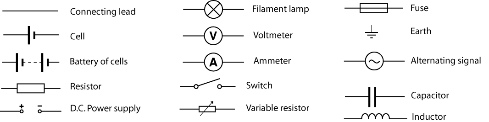

← Back to Main Circuit Symbols
Other Circuit Symbols in AP Physics C

Note: Resistors can be shown as either a rectangle or a zigzag line. Inductors are included here, but we will cover them in detail later.
- Connecting Lead: A straight line representing a wire that connects components in a circuit.
- Cell: A single source of electrical energy (one long and one short line).
- Battery of Cells: Two or more cells connected together (multiple long and short lines in a row).
- Resistor: Limits the flow of current. Shown as a rectangle or a zigzag line.
- DC Power Supply: Provides a constant direct current (DC) voltage to a circuit.
- Filament Lamp: Produces light when current flows through it. Used as an indicator or load.
- Voltmeter: Measures voltage (potential difference) across two points in a circuit. Symbol is a circle with a "V" inside.
- Ammeter: Measures current flowing through a circuit. Symbol is a circle with an "A" inside.
- Switch: Opens or closes a circuit to stop or allow current flow.
- Variable Resistor: A resistor whose resistance can be adjusted. Symbol is a resistor with an arrow across it.
- Fuse: A safety device that melts and breaks the circuit if the current is too high.
- Earth (Ground): A reference point for voltage; common return path for current.
- Alternating Signal: Represents an AC (alternating current) source or signal in a circuit.
- Capacitor: Stores electrical energy temporarily. Shown as two parallel lines (sometimes one curved).
- Inductor: A coil of wire that stores energy in a magnetic field. We will go over inductors later.
For basic circuit elements (resistor, capacitor, inductor, battery, etc.), see the main circuit symbols reference.